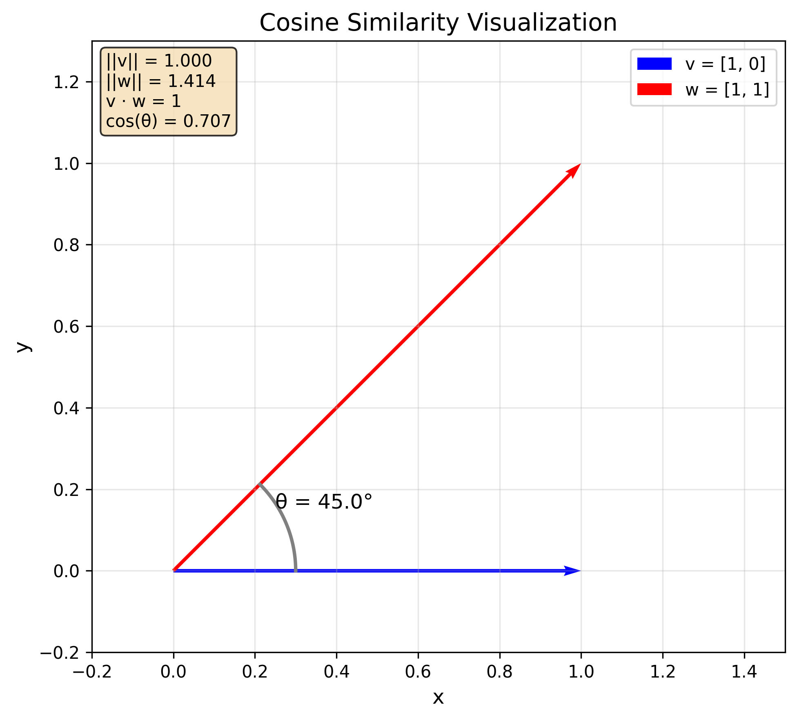
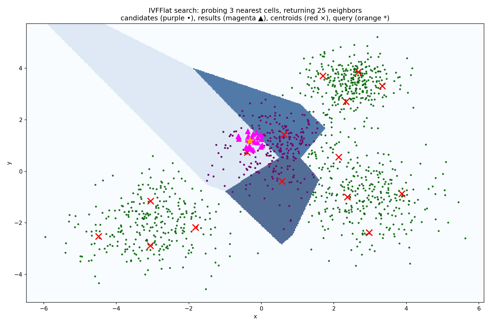

Embeddings
What are Embeddings?
Embeddings are a way to represent text as a semantically meaningful vector of numbers. The core idea is that if two texts are similar, then their vector representations should be similar as well.
For example, the embeddings of "I love programming in Python" and "I like coding in a language whose symbol is a snake" should be similar despite the fact that the texts have practically no words in common. This is called semantic similarity as opposed to syntactic similarity which is about the similarity of the sentence structure and the words used.
Depending on the use case, you can embed words, sentences, paragraphs, or even entire documents.
The concept of embeddings—and their similarities—is useful for many applications:
- Semantic search: You can use embeddings to find the most similar texts to a given query
- Clustering: You can use embeddings to cluster texts into different groups based on their semantic similarity
- Recommendation systems: You can use embeddings to recommend similar items to a given item
In later chapters, we'll also explore how to use embeddings to build RAG pipelines that enhance the quality of your LLM applications.
So how are embeddings generated? Interestingly, large language models (LLMs) can produce them as a byproduct of their architecture.
After the tokenizer has converted the text into tokens, a so-called embedding layer transforms every token into a high-dimensional vector. These vectors are continuously refined through the transformer layers until an "unembedding layer" produces the final output—the logits over the vocabulary. Since an LLM is trained to predict the next token, its embedding layer automatically learns to represent tokens in a semantically meaningful way.
Alternatively, you can use specialized embedding models trained specifically to produce high-quality embeddings.
OpenAI provides a range of embedding models, the most important of which are the text-embedding-3-small and text-embedding-3-large models.
You can use them like this:
import os, requests
response = requests.post(
"https://api.openai.com/v1/embeddings",
headers={
"Authorization": f"Bearer {os.getenv('OPENAI_API_KEY')}",
"Content-Type": "application/json",
},
json={
"input": "Your text string goes here",
"model": "text-embedding-3-small"
}
)
response_json = response.json()
embedding = response_json["data"][0]["embedding"]
print(embedding[:5])
print(len(embedding))
This will output something along the lines of:
[0.005132983, 0.017242905, -0.018698474, -0.018558515, -0.047250036]
1536
Note that embeddings are typically high-dimensional.
For example, the text-embedding-3-small model produces 1536-dimensional embeddings while the text-embedding-3-large model produces 3072-dimensional embeddings.
In general, higher-dimensional embeddings capture more nuanced relationships but can be slower to compute and more memory-intensive to store.
Embedding Similarity
Remember, the core idea behind embeddings is that semantically similar texts should have similar vector representations. But how can we actually calculate the similarity between two embeddings?
Embeddings are vectors, and vector similarity is commonly measured using cosine similarity, defined as:
$$ \text{similarity}(\vec{v}, \vec{w}) = \cos(\theta) = \frac{\vec{v} \cdot \vec{w}}{|\vec{v}| |\vec{w}|} $$
where \(\theta\) is the angle between the vectors \(\vec{v}\) and \(\vec{w}\), \(\vec{v} \cdot \vec{w}\) is the dot product of the vectors and \(|\vec{v}|\) and \(|\vec{w}|\) are their norms.
As a reminder, the dot product (also called the inner product) of two vectors is defined as:
$$ \vec{v} \cdot \vec{w} = \sum_{i=1}^{n} v_i w_i $$
And the norm of a vector is defined as:
$$ |\vec{v}| = \sqrt{\sum_{i=1}^{n} v_i^2} $$
The cosine similarity is:
- equal to 1 if the vectors have the same direction,
- equal to 0 if the vectors are orthogonal,
- equal to -1 if the vectors have opposite directions.
Generally speaking, the closer the cosine similarity is to 1, the more similar the vectors are. The closer it is to -1, the more dissimilar they are.
Here is an example implementation of cosine similarity:
def get_norm(v):
return math.sqrt(sum(x ** 2 for x in v))
def get_dot_product(v, w):
return sum(v[i] * w[i] for i in range(len(v)))
def get_cosine_similarity(v, w):
return get_dot_product(v, w) / (get_norm(v) * get_norm(w))
v = [1, 0]
w = [1, 1]
print(get_norm(v)) # 1.0
print(get_norm(w)) # 1.41...
print(get_dot_product(v, w)) # 1
print(get_cosine_similarity(v, w)) # 0.707...
This is how the cosine similarity between the two vectors looks like:

Note that you typically shouldn't use plain Python implementations for mathematical operations like norms or dot products. Instead, rely on libraries like NumPy or SciPy because the latter will vectorize the operations which is much more efficient than using regular Python loops.
Developers often use the dot product—or even Euclidean distance—to measure similarity instead of the cosine similarity. This works because embeddings are usually normalized to unit length.
Let's verify that this is true for the embeddings produced by OpenAI:
import math
def get_norm(embedding):
return math.sqrt(sum(x ** 2 for x in embedding))
# Here embedding is some embedding from OpenAI (for example, you can use the embedding from the previous section)
print(get_norm(embedding)) # 1.0
If two embeddings are normalized to unit length—that is, their norms are 1—their cosine similarity is equal to their dot product:
$$ \cos(\theta) = \frac{\vec{v} \cdot \vec{w}}{|\vec{v}| |\vec{w}|} = \vec{v} \cdot \vec{w} $$
Similarly, the Euclidean distance of two unit-length vectors becomes a monotonic transformation of the cosine similarity:
$$ |\vec{v} - \vec{w}|^2 = |\vec{v}|^2 + |\vec{w}|^2 - 2 \vec{v} \cdot \vec{w} = 2 - 2 \cos(\theta) $$
Therefore:
$$ |\vec{v} - \vec{w}| = \sqrt{2 - 2 \cos(\theta)} $$
This means that for unit-length embeddings, ranking by cosine similarity is equivalent to ranking by dot product or Euclidean distance. However, this equivalence holds only for unit-length vectors.
Therefore, when using similarities other than the cosine similarity, you should always verify that the embeddings produced by the embedding model you are using are normalized to unit length.
Vector Databases
Vector databases provide an efficient way to store and retrieve embeddings, with their primary purpose being to enable fast similarity searches. When working with a large number of embeddings, we would theoretically have to compare a query embedding to all others to find the nearest neighbors. This process becomes increasingly slow as the number of embeddings grows. To address this, vector databases use specialized algorithms to accelerate the search process.
One of the most widely used algorithms for efficient similarity search is IVFFlat (short for InVerted File Flat).
The IVFFlat algorithm works by partitioning the embedding space into cells with centroids. At search time, the algorithm first finds the nearest centroids and then performs a search only inside those cells.

In other words, the algorithm performs the following steps to find the best embeddings for a query embedding \(\vec{v}\):
- Calculate the distance between \(\vec{v}\) and all centroids.
- Find the \(k\) centroids with the smallest distance to \(\vec{v}\).
- Calculate the distance between \(\vec{v}\) and all embeddings within the cells corresponding to the \(k\) centroids from step 2.
- Return the embeddings with the smallest distance to \(\vec{v}\).

The cells and their centroids must be learned from the data in advance, which is why we typically build the index only after inserting some initial data.
It's important to note that, like most similarity search algorithms used in vector databases, IVFFlat performs only an approximate nearest neighbor search. As a result, it may not always return the exact nearest neighbors, depending on the location of the query embedding in the vector space. This trade-off prioritizes performance over absolute accuracy.
We commonly use the pgvector extension for Postgres to store the embeddings.
Let's explore how to use it.
First, start a local PostgreSQL database:
docker run -d --name pgvector-db \
-e POSTGRES_USER=postgres \
-e POSTGRES_PASSWORD=Secret123! \
-e POSTGRES_DB=vectordb \
-p 5432:5432 \
-v pgdata:/var/lib/postgresql/data \
pgvector/pgvector:pg17
Connect to the database:
docker exec -it pgvector-db psql -U postgres -d vectordb
Check whether the vector extension is enabled:
SELECT extname, extversion
FROM pg_extension
WHERE extname = 'vector';
If the extension is not enabled, enable it:
CREATE EXTENSION vector;
Let's now create a table to store the embeddings:
CREATE TABLE items (
id SERIAL PRIMARY KEY,
content TEXT,
embedding VECTOR(3)
);
In reality, the embedding dimension should be much larger: we only use 3 because this is a toy example.
Insert some data into the table:
INSERT INTO items (content, embedding) VALUES
('apple', '[0.1,0.2,0.3]'),
('banana', '[0.11,0.19,0.29]'),
('car', '[0.9,0.8,0.7]');
Double-check that the data was inserted correctly:
SELECT * FROM items;
Now we can run our first similarity search:
SELECT id, content, embedding <-> '[0.1,0.2,0.25]' AS dist
FROM items
ORDER BY dist
LIMIT 2;
This returns the embeddings for banana and apple, which are the two closest to [0.1,0.2,0.25].
It's important to note that pgvector technically works with distances and not with similarities.
The difference is straightforward: the larger the distance, the smaller the similarity, and vice versa.
After all, two vectors with high similarity should be close together, while those with low similarity should be far apart.
In fact, it may be more intuitive to think in terms of distance rather than similarity. While the concept of "similarity" between vectors can be somewhat abstract, distance is a straightforward geometric measure that is immediately understandable.
The pgvector extension supports three operators for computing distance:
<->for the Euclidean distance<#>for the negative inner product<=>for the cosine distance which is defined as1 - cosine similarity
Note that <#> is the negative inner product because <#> is supposed to be a distance operator.
Similarly, <=> represents the cosine distance, not the cosine similarity.
We can use the operators like this:
SELECT
'[0.1,0.2,0.3]'::vector <-> '[0, 0.1, 0.2]'::vector AS euclidean_distance,
'[0.1,0.2,0.3]'::vector <#> '[0, 0.1, 0.2]'::vector AS neg_inner_product,
'[0.1,0.2,0.3]'::vector <=> '[0, 0.1, 0.2]'::vector AS cosine_distance;
This will output approximately:
0.1732for the Euclidean distance-0.0800for the negative inner product0.0438for the cosine distance
We can verify our results in Python:
import math
def get_distance(v, w):
return math.sqrt(sum((v[i] - w[i]) ** 2 for i in range(len(v))))
def get_dot_product(v, w):
return sum(v[i] * w[i] for i in range(len(v)))
def get_norm(v):
return math.sqrt(sum(x ** 2 for x in v))
def get_cosine_similarity(v, w):
return get_dot_product(v, w) / (get_norm(v) * get_norm(w))
v = [0.1, 0.2, 0.3]
w = [0, 0.1, 0.2]
print("Euclidean distance:", get_distance(v, w))
print("Negative inner product:", -get_dot_product(v, w))
print("Cosine distance:", 1 - get_cosine_similarity(v, w))
This will output approximately:
0.1732for the Euclidean distance-0.0800for the negative inner product0.0438for the cosine distance
These values match those returned by pgvector.
If all vector databases did was compute distances, implementing one would be relatively straightforward. However, remember that their primary purpose is to support efficient distance-based search.
We won't see meaningful performance gains with just three items. So, let's drop the current table, create a new one, and insert a million random 512-dimensional embeddings along with some dummy content.
DROP TABLE items;
CREATE TABLE items (
id SERIAL PRIMARY KEY,
content TEXT,
embedding VECTOR(512)
);
INSERT INTO items (content, embedding)
SELECT
'rand-' || g,
ARRAY(
SELECT random()
FROM generate_series(1, 512)
)::vector(512)
FROM generate_series(1, 1000000) AS g;
This command will take a while to complete.
We should double check that the data was inserted correctly by looking at the first 10 rows and the total number of rows:
SELECT * FROM items LIMIT 10;
SELECT COUNT(*) FROM items;
Let's perform a simple similarity search and find the 5 nearest neighbors of the zero vector:
WITH q AS (
SELECT array_fill(0.0::float8, ARRAY[512])::vector(512) AS v
)
SELECT id, content
FROM items, q
ORDER BY embedding <=> q.v
LIMIT 5;
This takes roughly 2.7 seconds on my machine—your results may vary.
If we explain the query by prefixing it with EXPLAIN ANALYZE, we can see that the query is performing a sequential scan of the table:
Sort Method: top-N heapsort [...]
-> Nested Loop [...]
-> CTE Scan on q [...]
-> Seq Scan on items [...]
We can now add an IVFFlat index to the table.
When creating the index, we can specify two parameters—lists which determines the number of cells to use and probes which determines the number of nearest cells to consider:
CREATE INDEX ON items USING ivfflat (embedding vector_cosine_ops) WITH (lists = 200);
SET ivfflat.probes = 100;
This command will take a while because it has the build the index from scratch—the cells and their centroids have to be learned from the data.
Now, let's run a similarity search again:
WITH q AS (
SELECT array_fill(0.0::float8, ARRAY[512])::vector(512) AS v
)
SELECT id, content
FROM items, q
ORDER BY embedding <=> q.v
LIMIT 5;
This takes roughly 0.7 seconds on my machine—yours may be different. This is a significant improvement in query performance and this improvement will only become more pronounced as the number of embeddings grows.
If we explain the query by prefixing it with EXPLAIN ANALYZE, we can see that the query is now using the IVFFlat index:
-> Index Scan using items_embedding_idx on items
You can drop the index again by running:
DROP INDEX items_embedding_idx;
Try rebuilding the index with different values for lists and probes and see how the performance changes.
There are other indices that you can use for similarity search.
For example, pgvector also supports the HNSW (Hierarchical Navigable Small World) index.
Additionally, other vector databases like Faiss support even more sophisticated indices.
For most practical purposes, pgvector combined with the IVFFlat index is sufficient.
Nevertheless, we encourage you to explore other vector databases and indices to find the best fit for your use case.
After all, the core idea behind all vector databases is the same: they enable us to store embeddings and perform efficient similarity searches using specialized indices.